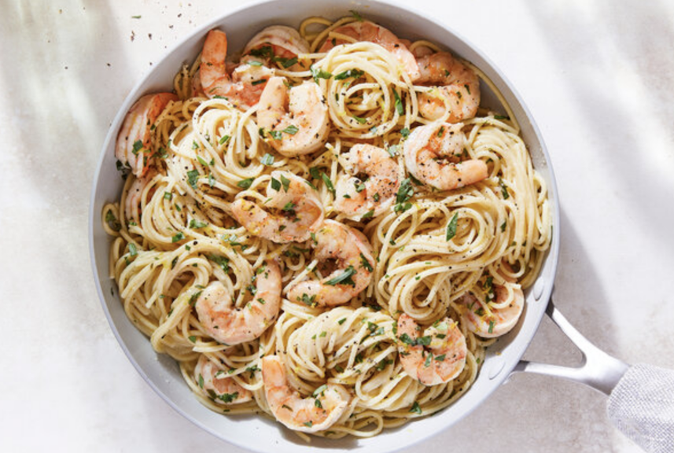

Shrimp Scampi

Description
Easy favorite, takes about 30 mins
Ingredients
- 2 Tablespoons butter
- 2 tablespoons extra-virgin olive oil
- 4 garlic cloves, minced
- ½ cup dry white wine or broth
- ¾ teaspoon kosher salt, or to taste
- ⅛ teaspoon crushed red pepper flakes, or to taste
- Freshly ground black pepper
- 1 ¾ pounds large or extra-large shrimp, shelled
- ⅓ cup chopped parsley
- Freshly squeezed juice of half a lemon
- Cooked pasta
Steps
- In a large skillet, melt butter with olive oil. Add garlic and sauté until fragrant, about 1 minute. Add wine or broth, salt, red pepper flakes and plenty of black pepper and bring to a simmer. Let wine reduce by half, about 2 minutes.
- Add shrimp and sauté until they just turn pink, 2 to 4 minutes depending upon their size. Stir in the parsley and lemon juice and serve over pasta